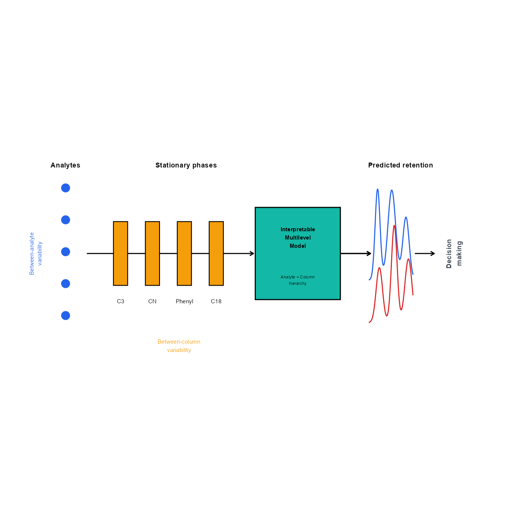

Code
library(ggplot2)
library(grid)
library(here)library(ggplot2)
library(grid)
library(here)# ---------------------------------------------------------
# Colors
# ---------------------------------------------------------
col_analyte <- "#2563EB" # blue
col_column <- "#F59E0B" # orange
col_model <- "#14B8A6" # teal
col_chrom1 <- "#2563EB" # chromatogram 1
col_chrom2 <- "#DC2626" # chromatogram 2
col_text <- "#374151"
# ---------------------------------------------------------
# Canvas
# ---------------------------------------------------------
p <- ggplot() +
coord_fixed(
xlim = c(0,13),
ylim = c(0,7)
) +
theme_void() +
theme(
plot.background = element_rect(
fill = "white",
colour = NA
)
)
# =========================================================
# 1. ANALYTES
# =========================================================
analytes <- data.frame(
x = rep(1.2,5),
y = c(1.8,2.7,3.6,4.5,5.4)-0.05
)
p <- p +
geom_point(
data = analytes,
aes(x,y),
size = 7/2,
colour = col_analyte
)
p <- p +
annotate(
"text",
x = 1.2,
y = 6,
label = "Analytes",
size = 5/2,
fontface = "bold"
)
# between analyte variability
p <- p +
annotate(
"text",
x = 0.35,
y = 3.5,
label = "Between-analyte\nvariability",
angle = 90,
colour = col_analyte,
size = 4/2
)
# =========================================================
# 2. ARROW: ANALYTES → COLUMNS
# =========================================================
p <- p +
geom_segment(
aes(
x = 1.8,
xend = 6.5,
y = 3.5,
yend = 3.5
),
arrow = arrow(length = unit(0.15,"cm")),
linewidth = 1/2
)
# =========================================================
# 3. STATIONARY PHASES
# =========================================================
columns <- data.frame(
x = c(4.0,4.9,5.8,6.7)-1.25,
label = c("C3","CN","Phenyl","C18")
)
# columns
p <- p +
geom_rect(
data = columns,
aes(
xmin = x-0.20,
xmax = x+0.20,
ymin = 2.6,
ymax = 4.4
),
fill = col_column,
colour = "black",
linewidth = 0.8/2
)
# labels
p <- p +
geom_text(
data = columns,
aes(
x = x,
y = 2.15,
label = label
),
size = 4/2
)
# title
p <- p +
annotate(
"text",
x = 5.35-0.75,
y = 6,
label = "Stationary phases",
size = 5/2,
fontface = "bold"
)
# between-column variability
p <- p +
annotate(
"text",
x = 5.35-0.95,
y = 0.9,
label = "Between-column\nvariability",
colour = col_column,
size = 4/2
)
# =========================================================
# 5. MULTILEVEL MODEL
# =========================================================
p <- p +
geom_rect(
aes(
xmin = 7.25-0.2-0.5,
xmax = 9.25+0.2-0.5,
ymin = 2.4-0.2,
ymax = 4.6+0.2
),
fill = col_model,
colour = "black",
linewidth = 1/2
)
p <- p +
annotate(
"text",
x = 8.25-0.5,
y = 3.95,
label = "Interpretable\nMultilevel\nModel",
size = 4/2,
fontface = "bold"
)
p <- p +
annotate(
"text",
x = 8.25-0.5,
y = 2.75,
label = "Analyte + Column\nhierarchy",
size = 3.0/2
)
# =========================================================
# 6. MODEL → CHROMATOGRAM ARROW
# =========================================================
p <- p +
geom_segment(
aes(
x = 8.95,
xend = 9.80,
y = 3.5,
yend = 3.5
),
arrow = arrow(length = unit(0.15,"cm")),
linewidth = 1.2/2
)
# =========================================================
# 7. PREDICTED CHROMATOGRAMS
# =========================================================
x <- seq(10.0,11.25,length.out = 300)-0.25
# upper chromatogram
chrom1 <-
dnorm(x,10.25-0.25,0.07)*0.45 +
dnorm(x,10.65-0.25,0.11)*0.70 +
dnorm(x,11.05-0.25,0.09)*0.40
# lower chromatogram
chrom2 <-
dnorm(x,10.30-0.25,0.09)*0.35 +
dnorm(x,10.72-0.25,0.08)*0.55 +
dnorm(x,11.12-0.25,0.10)*0.45
chrom <- data.frame(
x = x,
upper = 2.75 + chrom1,
lower = 1.55 + chrom2
)
p <- p +
geom_line(
data = chrom,
aes(x,upper),
colour = col_chrom1,
linewidth = 1/2
)
p <- p +
geom_line(
data = chrom,
aes(x,lower),
colour = col_chrom2,
linewidth = 1/2
)
# title
p <- p +
annotate(
"text",
x = 10.65,
y = 6,
label = "Predicted retention",
size = 5/2,
fontface = "bold"
)
# =========================================================
# 8. CHROMATOGRAM → DECISION MAKING
# =========================================================
p <- p +
geom_segment(
aes(
x = 11.05,
xend = 11.60,
y = 3.5,
yend = 3.5
),
arrow = arrow(length = unit(0.15,"cm")),
linewidth = 0.5
)
p <- p +
annotate(
"text",
x = 12.15,
y = 3.5,
label = "Decision\nmaking",
angle = 90,
size = 5/2,
fontface = "bold",
colour = col_text
)
# =========================================================
# Display
# =========================================================
p
# =========================================================
# Export
# =========================================================
manuscript_figure_dir <- here::here(
"deliv",
"figures",
"manuscript",
"main"
)
if(!file.exists(manuscript_figure_dir)) {
dir.create(
manuscript_figure_dir,
recursive = TRUE
)
}
ggsave(
filename = here::here(
manuscript_figure_dir,
"TOC_multilevel_retention.svg"
),
plot = p,
width = 7,
height = 4,
device = "svg",
bg = "white"
)
ggsave(
filename = here::here(
manuscript_figure_dir,
"TOC_multilevel_retention.tiff"
),
plot = p,
width = 3.25,
height = 1.75,
dpi = 600,
bg = "white"
)sessionInfo()R version 4.3.1 (2023-06-16 ucrt)
Platform: x86_64-w64-mingw32/x64 (64-bit)
Running under: Windows 10 x64 (build 19045)
Matrix products: default
locale:
[1] LC_COLLATE=Polish_Poland.utf8 LC_CTYPE=Polish_Poland.utf8
[3] LC_MONETARY=Polish_Poland.utf8 LC_NUMERIC=C
[5] LC_TIME=Polish_Poland.utf8
time zone: Europe/Warsaw
tzcode source: internal
attached base packages:
[1] grid stats graphics grDevices utils datasets methods
[8] base
other attached packages:
[1] here_1.0.1 ggplot2_3.5.1
loaded via a namespace (and not attached):
[1] vctrs_0.6.5 svglite_2.1.3 cli_3.6.2 knitr_1.46
[5] rlang_1.1.3 xfun_0.54 generics_0.1.3 textshaping_0.4.0
[9] jsonlite_1.8.8 labeling_0.4.3 glue_1.7.0 colorspace_2.1-0
[13] rprojroot_2.0.4 htmltools_0.5.8.1 ragg_1.3.2 fansi_1.0.6
[17] scales_1.3.0 rmarkdown_2.27 evaluate_1.0.3 munsell_0.5.1
[21] tibble_3.2.1 fastmap_1.2.0 yaml_2.3.8 lifecycle_1.0.4
[25] compiler_4.3.1 dplyr_1.1.4 pkgconfig_2.0.3 htmlwidgets_1.6.4
[29] rstudioapi_0.16.0 farver_2.1.2 systemfonts_1.1.0 digest_0.6.35
[33] R6_2.5.1 tidyselect_1.2.1 utf8_1.2.4 pillar_1.9.0
[37] magrittr_2.0.3 withr_3.0.2 tools_4.3.1 gtable_0.3.5